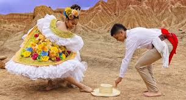

El principal enfoque general de las festividades es la preservación, promoción y celebración de la identidad folclórica del Huila, resaltando sus tradiciones culturales, musicales, gastronómicas y artísticas que han sido transmitidas de generación en generación. Estas celebraciones buscan fortalecer el sentido de pertenencia de la comunidad y mantener vivas las costumbres representativas de la región, convirtiéndose además en un espacio de encuentro para habitantes y visitantes. Asimismo, el último día de la festividad conmemora el martirio y las obras de los apóstoles Simón Pedro y Pablo de Tarso, figuras importantes dentro de la tradición cristiana, cuya memoria simboliza la fe, el sacrificio y la difusión de sus enseñanzas.
